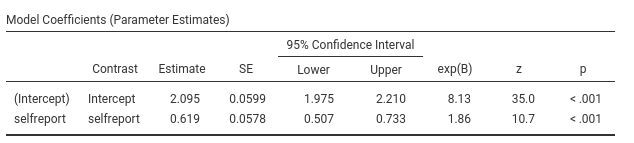
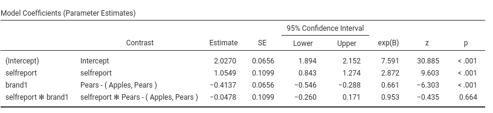

Poisson models for frequencies
3.0.0
Simple frequencies analysis with
In this example we analyze a dependent variable featuring frequency of events, or count data. The indipendent variables are one continuous and one dichotomous. We employ a poisson regression model.
We run the analyses with the GAMLj module in jamovi. One can follow the example by downloading the csv file. Be sure to install GAMLj module from within jamovi library.
The data are simulated, not real, so please do not cite them to argue about any issue. The reason of this is to provide an example where the Poisson model assumptions are surely met, so some of the difficulties of dealing with count data and frequencies are not present. For more elaborated examples see Frequencies analysis with overdispersed models.
The research design
Imagine a hypothetical study about addiction to mobile phones. Imagine a researcher developed a self-report questionnaire to measure participants mobile phone addiction (over-usage) and wanted to test whether the scores of the questionnaire predicts actual addictive behavior. Addictive behavior is measured in an experimental setting by counting how times the participants checked the mobile phone while waiting for the experimenters to arrive to start the measurement session (let’s ignore the time spent on each checks and assume all participants waited for the same ammount of time).
The variables are then:
- checks: number of time spent checking the phones.
- selfreport: the total score of the self-report questionnaire
- brand : brand of the participant’s phone: either
PearsorApples
The descriptive and frequencies the independent variables show the sample charateristics.

The frequencies for checks (the dependent variable) are
in the following plots.

It is clear that the average number of checks is about 10, but the distribution is following a Poisson distribution, with the majority of participants showing a low frequency of checks, and a few participants showing medium and high frequencies, with the rarity of a frequency being proportional to the frequency itself. As the data are simulated, we know that they come from a Poison ditribution.
Understanding the problem
We want to understand how the frequency of checks is associated with
the participant self-report questionnaire score (a sort of validity
check of the questionnaire), if the brand of the phone makes a
difference in the expected frequency of checking, and whether the
questionnaire predictive ability varies for the two cell phone brands.
Thus, we are looking for an effect of selfreport and a main
effect of brand to answer the first two questions, and for
the interaction between selfreport and brand
to answer the third question.
We employ the Poisson model because it is the classical model for modelling count dependent variables, and, being a special case of the generalized linear model, can accomodate main effects and intereactions. This is equivalent to a linear model where the link function is the logarithm of the predicted frequencies \(log(\hat{F})\), and the Poisson distribution is assumed for the dependent variable.
We first start with only selfreport as independent
variable, then we estimate the full model with also brand
and the interaction as predictors.
Interpretation
Recall that the predicted values of the models are the logarithm of
the frequencies of checking the phone. Thus, the model coefficients are
expressed in the log(Freq) scale. A clearer scale is obtained by
removing the logarithm from the coefficients, obtaining coefficients
expressed in original frequency scale. This is the exp(B)
column of the results tables: exp(B) is the frequency rate
of change: How many times should we multiply the expected frequency at
\(x_i\) to obtain the frequency at
\(x_{i+1}\). In other words, the rate
of change of the frequency as one increases the independent variable of
one unity (or move from one group to the other for categorical
independent variables).
The plots and the estimated marginal means are conviniently transformed in the frequency scale, so they can be interpreted directly as the frequency of checking.
Simple Poisson regression model
Let’s start with predicting checks with
selfreport. In GAMLj generalized linear model
we select the Poisson model, push the checks
variable in the Dependent Variable field and
selfreport in Covariates.
The model yields its results.
R-squared and model info
As soon as we fix the variables, results are displayed in the tables, with the first table showing some info about the model.
Here we find several info, some noteworthy ((see technical details for more info):
- the R-squared, that gives information about the goodness of fit of the model . Our ability to predict the frequencies of checks increases of 33% thanks to the independent variable as compared to using the expected (average) frequency alone.
- AIC (Aikake Information Criterion)_ Based on the likelihood of the model, decreases with the goodness of fit of the model. Useful to compare the present model with alternative models (see below)
- Value/DF: This is the Pearson \(\chi^2\) divided by the degrees of freedom.
If the model fits well, its value should be around 1. This index is
useful to evaluate the dispersion of the model. A model is overdispersed
if the variance of the dependent variable is larger than what expected
by the assumed distribution. In this example, it’s value is bourderline,
as it is three times what it should be. However, we still have to
include the
brandvariable which may explain variability of the dependent variable and thus capture dispersion. More details in Advanced frequencies analysis with Poisson models and in technical details.
Omnibus tests

The omnibus Chi-Squared test is showing a statistical significant
relationship between the self-report score and the number of checks. If
we go down to the Model coefficients table we can interpret
the direction of the effect by looking at the B and exp(B)
coefficients.

Model Coefficients
There is a positive relationship between selfreport and
checks (B=1.04, exp(B)=2.84), such that for one unit more
in the self-report score, the frequency of checks increases 2.84
times. We just deduce this by looking at the exp(b).
Is that a big effect? Difficult to say, because we do not understand the
units of the self-report score, so “one unit” does not say much. To
overcome this interpretational limit, we can standardized the
independent variable in Covariated Scoring panel,


We can now look at the new exp(B)=1.86 which says that the frequency of checks almost double for each standard deviation more in the self-report. It is not small as an effect: the average person in the sample checked the phone around 8 times (the intercept exp(B) is 8.13), and people one standard deviation above average round 15.12 times.
Plot
Finaly, we can ask for the plot of the predicted score, along with confidence intervals and observed scores.

The graph shows a clear exponential relationship between
relfreport and the frequency of check (which we took into
the account thanks to the log() transformation): below the avergage of
self-report score, the frequency does not change much, but when the
score gets to one standard deviation above averare its increase
intensifies and reaches very high frequencies for scores up to 2
standard deviations above average. We also see a reasonable fit of the
predicted frequencies to the observed ones.
Full model.
Now we add brand as a factor in the model, and its
interaction with selfreport
First, we push brand in the Factors field,
then we go to the Model panel and select the interaction.
We
need this second steps because jamovi GAMLj follows a somehow old
tradition established by SPSS of automatically including continuous
independent variables in the model without their interaction with
categorical variables.
Model info

We first note that the \(R^2\) rised
up to .50, showing a strong effect of brand. We can also
appreciate that the Value/DF index is now 0.987,
practically 1: The model in now well in line with the assumptions of the
Poisson model, and no overdispersion is present.
Omnibus tests
Results show a main effect of brand and confirm the main
effect of self-report. No evidence of an important
interaction is there.
Model coefficients

The effect of selfreport is still (averaging across
brand) positive but stronger than before, exp(b)=2.87.
Keeping constant brand, the frequency of checks increases
around 3 times for each standard deviation of
selfreport.
To interpret the effect of brand first look at the
contrast column. It says that the default coding of
brand compares the Pears group with the
average of the groups (Pears,Apples). When there are only
two groups, a direct comparison is clearer, thus we go to
Factor coding panel and we ask for simple
contrast, which does exactly that.

The exp(B) associated with brand is .437: the group
Pears checks the phone .437 time more than the group
Apples, which means (by taking the reciprocal of exp(B))
2.29 times less than Apples.
Plot
As usual, a picture is worth a thousand words.
This concludes these set of analyses.
Comments?
Got comments, issues or spotted a bug? Please open an issue on GAMLj at github or send me an email